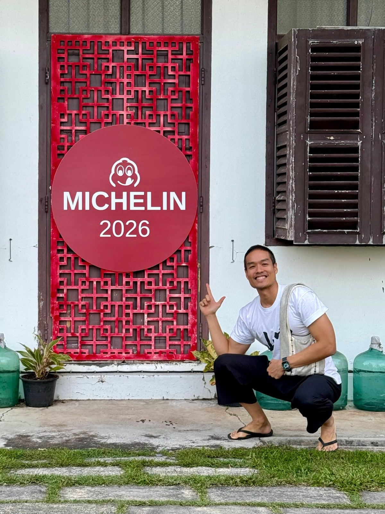
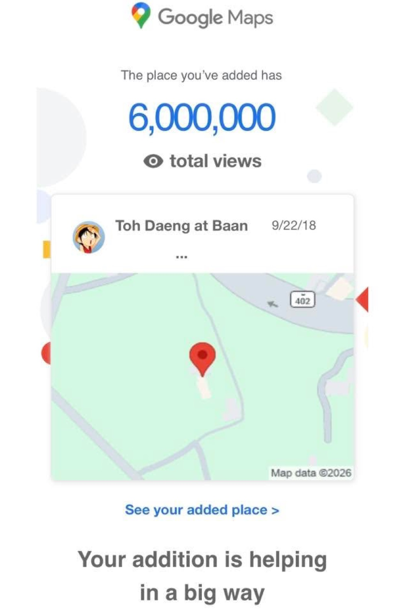

2569 · รางวัล · เหตุการณ์
บ้านอาจ้อครบ 90 ปี ร้านโต๊ะแดงได้ Michelin 2026 และวิวทะลุ 6 ล้าน


Michelin 2026 + 6M views แล้ววว 😇🎉
ขอบคุณลูกค้า ทีมงาน เพื่อนๆ ญาติๆ ที่สนับสนุน บอกต่อ โต๊ะแดงภูเก็ต และ บ้านอาจ้อ ตลอดมานะครับ 😇❤️
ปีนี้บ้านอาจ้อ อายุครบ 90 ปี แล้ว เปิดกิจการโต๊ะแดงภูเก็ต เดินทางมาเกือบ 8 ปี มาได้ไกลเกินฝันมากมาย 🎉✨
ถ้าถามว่าอะไรที่รู้สึกว่ายากที่สุด ก็คือการเข้าใจลูกค้า ดูแลรักษาพลังทีมงาน บาลานซ์การเงิน ให้ยังอยู่รอดได้ในสภาวะปัจจุบัน ซึ่งเปลี่ยนแปลงเร็วแบบตามไม่ทันจริงๆ 😅
ไม่ว่ายังไง จะตั้งใจอย่างที่สุดที่ต้องรอด และเดินโตต่อไปข้างหน้าให้ได้ 💪🔥
ขอบคุณทุกคนอีกครั้ง 😇❤️
ปล ฝันถัดไปจะเป็นยังไงต่อ จี้โปรดชี้แนะ 😆❤️
#longdaengPhuket 🧧
#tohdaengPhuket 🧧
#บ้านอาจ้อ ❤️
ที่มา: Bib Gourmand ปีที่ 5 ติดต่อกัน — MICHELIN Guide Thailand 2026 — guide.michelin.com